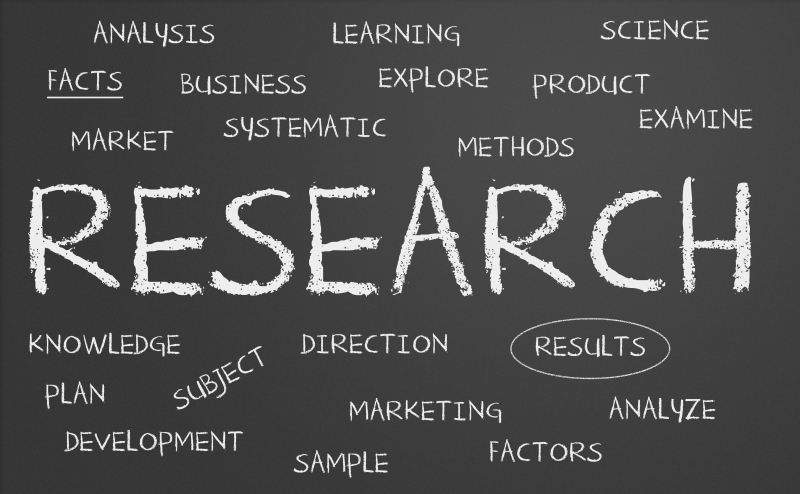

The Center for Applied Research in Information Technology (CARIT) is an interdisciplinary research
center that uses social science methods to provide survey research, program evaluation, performance measurement,
and experimental research. The goal of CARIT is to provide quality information to local communities and businesses.
CARIT will provide an environment that focuses on facilitating an applied learning environment for local businesses, communities
and students a like with data collection, data management and analysis.
Recent News
- January 15th, 2018 - We would like to welcome Dr Bruce Banner to our team as the head researcher of nuclear
physics and dark matter particles. Dr Banner studied at Desert State University as the star
student of Professor Herbert Josiah Weller. He would later conintue his studies at Harvard
University, Pennsylvania State University and eventually get his doctorate in nuclear physics
at the Caltech. Dr Banner has worked with the likes of Walter Langkowski, Peter Corbeau, Tony Stark
and Raoul Stoddard.
- December 1st, 2017 - Doctor Stephen Vincent Strange will be hosting a special lecture on mystic totems in the Illuminati Hall on December 10th, 2017.
- November 26th, 2017 - Research of the Arc Reactor is currently underway. The Arc Reactor has become a powerfully clean source of energy.
The goals to make arc reactor power a stable element that would render nuclear power obsolete.